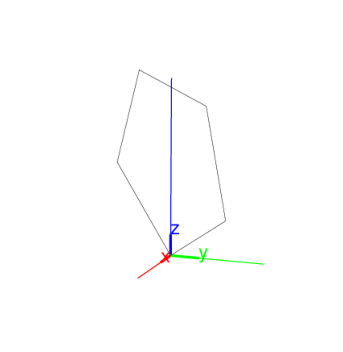
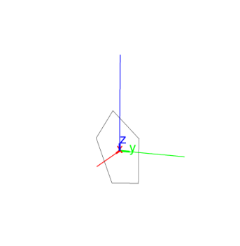

14.9.2 Regular polygons in space: isopolygon
See Section 13.10.2 for regular polygons in the plane.
The isopolygon command creates regular polygons in space.
-
isopolygon takes four arguments:
-
A,B,P, three points.
- k, an integer.
- isopolygon(A,B,P,k) returns and draws a regular
polygon with one edge AB in the plane ABP with |k| sides.
If |k| is positive, then the polygon is positively oriented,
otherwise it is negatively oriented.
Examples
-
Input:
| A:= point(0,0,0); |
| B:= point(3,3,3); |
| P:= point(0,0,3); |
| isopolygon(A,B,P,5)
|
Output:

- Input:
isopolygon(A,B,P,-5)
Output:
